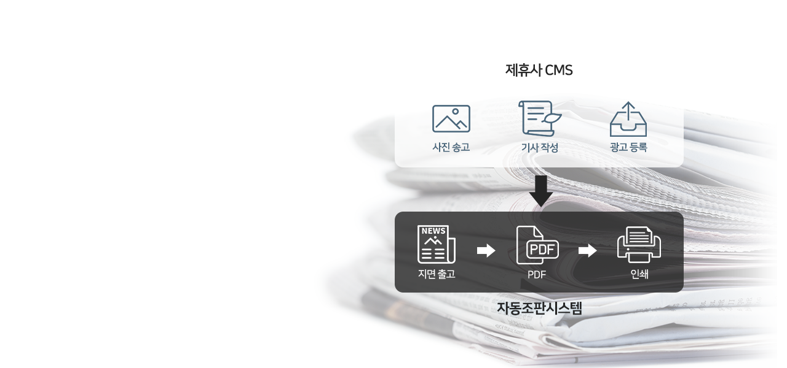

-
미디어토마토손쉬운 신문 제작의 혁신!
디지털 신문을 제작하는 빠른 솔루션CMS시스템+댓글모음+토마토AD 광고까지 원스탑 솔루션자세히 보기
효율적이고 퀄리티 높은 신문제작
저비용 고효율 제작시스템 단기간에 구축! -
뉴스통AI가 적용된 개인 맞춤형
뉴스 큐레이션 서비스이미지 중심의 화면구성, 풍부한 동영상 뉴스컨텐츠를자세히 보기
터치한번으로 쉽고 빠르게 확인하세요!
나만의 공간 뉴스북에서
자유롭게 게시물을 업로드하며 외부 컨텐츠를 수집할 수 있습니다. -
서치통조사와 홍보를 향한 새로운 플랫폼간단한 홍보, 광고부터 참여자들의 생각까지,자세히 보기
고객 만족도 조사, 정책 홍보, 기업 상품 홍보 등
다양한 설문을 서치통에서 시작해 보세요 -
자동조판 시스템뉴미디어 시대를 이끌어가는
종합신문제작 솔루션제휴사 CMS와 연동한 자동조판 시스템과 템플릿,자세히 보기
스크립트 제작까지 원스탑 솔루션 제공!
타사들과 차별화된 획기적이고 효율적인 시스템으로
뉴미디어 시대를 이끌어 나갑니다.

02. 서치통
높은 패널 응답률
더 많은 참여자의 생각을 더 빠르게 받아보세요.
서치통은 설문 보상 시스템을 통하여 높은 패널 응답률을 유지합니다.
통계 분석 서비스
4대 정기여론조사 미디어토마토가 제공하는
통계 분석 서비스를 받아보세요.
조사결과 뉴스보도
조사에 그치지 않고 언론 홍보까지 이어지는 서비스.
서치통 패널을 이용할 경우 뉴스토마토 보도도 가능합니다.